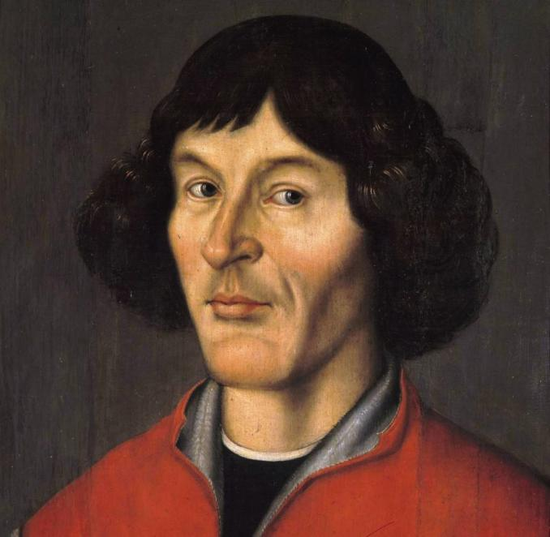

Nicolaus Copernicus
Nicolaus Copernicus was mathematician, physician, cartographer, classics scholar, translator, governor, diplomat, Catholic canon and economist. He was also involved in astronomy. But how it happened?
Biography
Nicolaus was born in Toruń on 19 February 1473. He was the youngest of four children of Toruń merchant Nicolaus Copernicus. He was 10 years old when his father died. The orphaned family was taken care of by his mother's brother, Łukasz Watzenrode. Thanks to his uncle, he was perfectly educated. He graduated from the Cracow Academy, from where he took his love for astronomy. He then studied law and medicine in Italy. Additionally, he was learning mathematics and astronomy. He began his next studies in 1496 in Bologna. He served an apprenticeship in 1500 in Rome. He took up medical studies in 1501 in Padua. In 1503, he obtained the diploma of Doctor of Canon Law in Ferrara. At the same time, he completed his medical studies in Padua. Then Nicolaus Copernicus left Italy and came to Warmia (where his uncle was a bishop). Thanks to the efforts of Łukasz Watzenrode, already Copernicus was admitted to the Warmia Chapter in 1497. From 1507 he was sent to Lizbark, and the number of duties limited his scientific activities. A conflict with his uncle over Nicolaus' aversion to being ordained a priest and to take over the cathedral after Watzenrode, caused Copernicus to leave Lizbork for Frombork and then for Olsztyn, where he was an administrator. His duties included, for example, the preparation of maps and documentation. For most of his life, Nicolaus Copernicus also treated the bishops of Warmia, members of the chapter and subordinates.

But let us return for a moment to the past and his interest in astronomy. Copernicus was interested in it during his studies in Kraków, and in the latter stages of his education, he reached for the works of the ancients and observed a lunar eclipse in 1500. In Frombork, where he described his observations of the sky, the heliocentric theory was established, which was the beginning of modern astronomy. In 1514. In his work, A Little Commentary Copernicus described the errors of the geocentric theory and proposed a change to heliocentrism. His views, initially known to a narrow circle of European scientists, also reached the then Pope. The first edition of the work On the Revolutions of the Celestial Spheres, containing the whole theory of Nicolaus Copernicus in 1543, met with stormy reactions of the church and scientific community. The publication was criticised by Martin Luther, among others, and after the Council of Trent, the Catholic Church considered it a threat to the biblical vision of the world and the Earth as its centre. Later, all his works were included in the Index of Prohibited Books, from where they were removed only in 1758.
In December 1542, the astronomer suffered a stroke, he lost his speech, and the right side of his body was paralyzed. During his illness on March 21, 1543, the astronomer's book was published and, according to legend, it reached Copernicus on the last day of his life. The astronomer died before May 21, 1543, in Frombork. He donated his rich collection of books to the Warmia diocese. These books with the archives of Warmia bishops and with the book collection of the Warmian chapter were stolen by the Swedes in 1626, who plundered the library in Frombork. On the recommendation of Gustav II Adolf, the collection was transferred to the library of the University of Uppsala, which got the most famous Copernican in the world.
Heliocentrism
Heliocentrism is an inherent issue when we think about Nicolaus Copernicus, although he isn't the only creator of this theory. Mainly thanks to him, we know why we have seasons or night now. How does it work? The sun is the centre of the universe, and all planets orbit around it. Copernicus supported this theory with calculations obtained through observation and using more advanced math. However, there was a problem with Copernicus' concept, he thought that the planets move in circles, but they are moving in an ellipse
Works


Dates
- February 19, 1473 - Date of birth.
- 1491–95 - Studies at the Krakow Academy
- 1495–1503 - studies at Italian universities
- 1515 - He published the first lecture on the heliocentric theory.
- 1513–16 - He participated in the work on the reform of the Julian calendar
- 1515–30 - He created the main work of De revolutionibus orbium coelestium
- 1543 - He published De revolutionibus orbium coelestium
- May 24, 1543 - Date of death
Facts
Thanks to the research carried out at the University of Uppsala, we know what Copernicus probably looked like. We know this based on DNA from a hair and a skull found at the altar in the Frombork cathedral. The photo page is HERE.
Copernicus' tomb was discovered in 2005, but why was it undiscovered for so long?